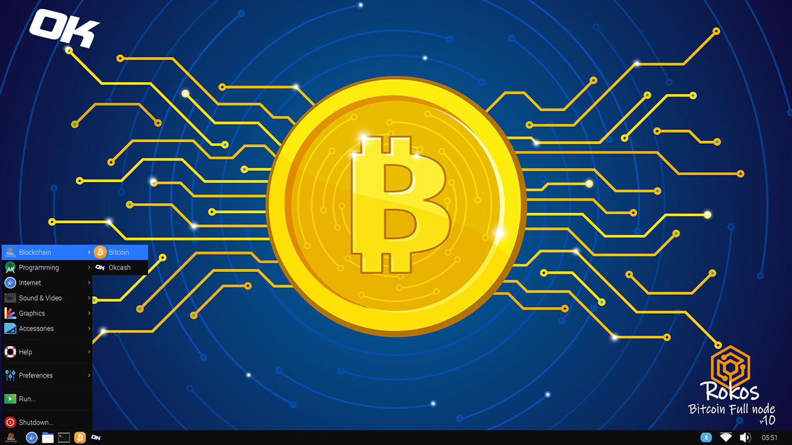
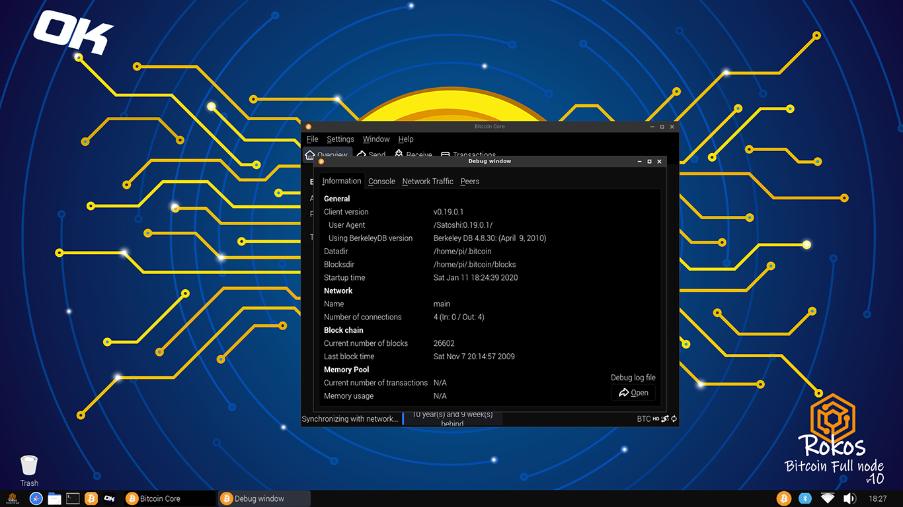

Cryptocurrency and the Internet of Things
Core: Debian based OS with integrated Bitcoin OK Clients, Nodes and more tools ready for use.
ROKOS v10 "Core" for Raspberry Pi 2, 3, 4 and IoT Devices.
Full Bitcoin OK Clients, nodes and much more. Faster, Easier, Stronger, more elegant.
We support the new technology and uses for cryptocurrencies in the Raspberry Pi , Banana Pro, Pine64+, Odroid and IoT environments, hence we came up with a Free solution for every IoT enthusiast, developer, user, service that want to use their IoT devices with Bitcoin and OK, or that would like to turn their Pi into a Hardware wallet, Mining or Staking device.
ROKOS comes with a fully functional Bitcoin Full node client among other goodies and provides the users with the best and easier Out of the Box experience; The favorite toolbox for developers and new users alike.
The First OS image release that merges the full power of Raspberry Pi zero, 2, 3, 4, Banana Pro, Pine64+ & IoT Devices with Bitcoin OK and Cryptocurrencies:
- ROKOS v10 "core" comes with integrated OK and Bitcoin Client / node, Miners, Dev tools, deps, etc.
Distribution aimed for everyone, from new IoT users to IoT Developers, Ease of use.
Download & Burn, Ready for use Out of the Box.
Requirements:
ROKOS v10 "core":
- Raspberry Pi 2, 3. - ready for download
- Pine64+ - coming update.
- Banana Pro - coming update.
- Odroid - coming update.
- 16gb SD card.
- External device (usb / hdd / ssd). To sync the BTC chain on the external device instead of the SD card, BTC chain alone is around 280gb.

